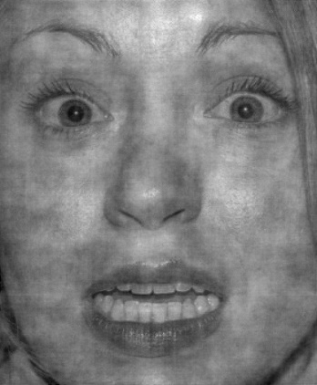
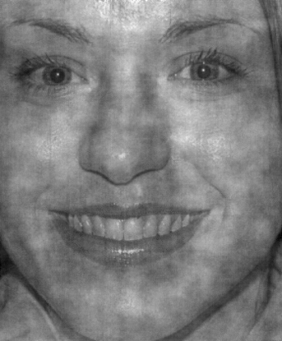

<!doctype html>
<html>
    <head>
        <title>My experiment</title>
        <script src="https://ajax.googleapis.com/ajax/libs/jquery/1.11.1/jquery.min.js"></script>
        <script src="jspsych-5.0.3/jspsych.js"></script>
        <script src="jspsych-5.0.3/plugins/jspsych-text.js"></script>
        <script src="jspsych-5.0.3/plugins/jspsych-single-stim.js"></script>
        <script src="jspsych-5.0.3/plugins/jspsych-categorize-animation.js"></script>
        <script src="jspsych-5.0.3/plugins/jspsych-multi-stim-multi-response.js"></script>
        <script src="faces.js"></script>
        <link href="jspsych-5.0.3/css/jspsych.css" rel="stylesheet" type="text/css"></link>
        <link href="jsscenter.css" rel="stylesheet" type="text/css"></link>
    </head>
    <body>
    </body>
    <script> 

    var NUM_PRACTICE_TRIALS = 2;
    var NUM_REAL_TRIALS = 2;
    var NUM_AFTERBREAK_TRIALS = 2;


    function parseName(image) {
      // This part made by Steven Weiss, it's regex magic, just ignore it.
      //note to self: this is just taking out certain characters and creating an array for each letter of "HFN"
      var extracted_groups = image.match(/([HFN])([0-9]+)_([0-9]+)/);
      //console.log(extracted_groups);
      var category = extracted_groups[1];
      // Treat zero intensity images as neutral
      if (extracted_groups[3] == 0) {
        category = "N";
      }
      return {
        // "H" if happy, "F" if fearful, "N" if neutral
        category: category,
        person: extracted_groups[2],
        intensity: extracted_groups[3],
        image_file: image
      };
    }

    // face_map can be accessed like this face_map["H"]["01"]
    var face_map = {}

    //faces is an array of paths to individual images in faces.js
    for (i = 0; i < faces.length; i++) {
      var face = parseName(faces[i]);
      // Create the maps if they don't exist
      if (!face_map[face.category]) {
        face_map[face.category] = {}
      }
      if (!face_map[face.category][face.person]) {
        face_map[face.category][face.person] = []
      }
      //Set the maps
      face_map[face.category][face.person].push(face.image_file)
    }


    var welcome_block = {
        type: 'text',
        text: 'Welcome to the experiment! Please maximize the window you currently have open. When you are ready, press any key to begin.',
    };

    var instructions_block = {
      type: 'text',
      text: '<div>' +
          '<p>In this experiment, two faces will flash briefly at the center ' +
          'of the screen, one after the other.</p>'+
          '<p> You will then be asked to judge if the faces were happy or fearful.' +
          '<p>If the face was a <strong>happy</strong> face, ' +
          'press the letter H on the keyboard.</p>' +
          '<p>If the face was a <strong>fearful</strong> face, press ' +
          'the letter F on the keyboard.</p>' +
          "<div class='left center-content'></img>" +
          "<p class='small'><strong>Press the F key</strong></p></div>" +
          "<div class='right center-content'></img>" +
          "<p class='small'><strong> Press the H key</strong></p></div>" +
          "<p>Press any key to continue.</p>" +
          '</div>'
    };

    var instructions_block2 = {
      type: 'text',
      text: '<div>' +
      '<p> Prior to judging whether the faces were happy or fearful, you will be asked to rate '+
      'which response you feel more confident in. If you feel that you are more confident in your first response, ' +
      'press <strong>1</strong>.' +
      '<p> If you feel more confident in your second response, press <strong>2</strong>.' +
      '<p> To reiterate the steps in the experiment:' +
      '<p> 1. Look at the cross and wait for the faces to appear, one after the other.'+
      '<p> 2. Rate which face judgment you feel more confident in.' +
      '<p> 3. Indicate if the first face was happy or fearful, and if the second face was happy or fearful.' +
      '<p> Press any key to continue' +
      '</div>'
    };

    var instructions_block3 = {
      type: 'text',
      text: '<div>' +
      '<p> One last thing, the pairing of the faces may be: <p> 1. "happy & happy" <p> 2. "fearful & fearful" <p> 3. "happy & fearful" <p> 4. "fearful & happy".  '
    };

// create and array to hold the face objects

//500ms, make the gap in between also five hundred ms, and the inter trial interval after they make button presses, half a second, fixation cross, half a second


// full seconds for practice, 10 trials 

var post_trial_gap = function(){
  return Math.floor( Math.random() * 1000 ) + 500;
};

function key(character) {
  return jsPsych.pluginAPI.convertKeyCharacterToKeyCode(character);
};

var h_face = {
  type: 'categorize-animation',
  stimuli: ["img/H01_100.png"],
  timing_post_trial: post_trial_gap,
  choices: [key('h'), key('f')],
  key_answer: key('h'),
  text_answer: 'happy',
  correct_text: 'Correct! This was a %ANS% face.',
  incorrect_text: 'Incorrect. This was a %ANS% face.',
  frame_time: 1000
};

var f_face = {
  type: 'categorize-animation',
  stimuli: ["img/F01_100.png"],
  timing_post_trial: post_trial_gap,
  choices: [key('h'), key('f')],
  key_answer: key('f'),
  text_answer: 'fearful ',
  correct_text: 'Correct! This was a %ANS% face.',
  incorrect_text: 'Incorrect. This was a %ANS% face.',
  frame_time: 1000

};
// TODO use an if node to go back to the h_face if they push 'f'

var example_stim = jsPsych.randomization.repeat([h_face, f_face], 1);

var example_prompt = {
  type: 'text',
  text: '<p> This is a short example to help you get familiarized with the faces. '+
  '<p> Press any key to begin.',
};


//should the practice have an output if the answer is wrong to correct participant?


// build in check and conditional statement here
var example ={
  type: 'single-stim',
  prompt:'<p>Indicate whether the face is <strong>fearful</strong> or <strong>happy</strong>',
  choices: ['f','h'],
  timeline: example_stim,

};

//need to store the order of presentation in order to check for correction

var example_end = {
  type: 'text',
  text: '<p>This is the end of the sample, press any key to begin the practice block '
};

var practice_prompt = {
  type: 'text',
  text: '<p> This is a short practice session that will be exactly like the actual task.' + '<p> Always keep your focus on the cross at the center of the screen. ' + '<p>Press any key to begin.'
};

var real_prompt = {
  type: 'text',
  text: '<p> This is the real experiment. <p>press any button to begin.'
};

var break_prompt = {
  type: 'text',
  text: '<p> Please feel free to take a short break if you need to. Or press the button to continue the experiment.'
};

var afterbreak_prompt = {
  type: 'text',
  text: '<p> Here we go again! Keep your eye fixated on the cross that appears in the middle of the screen. Press any key to begin.'
};

var times_looped_practice = 0;

var practice_stim = {
  type: 'single-stim',
  choices: ['f','h'],
  timeline: jsPsych.randomization.repeat([h_face, f_face], 1),
};

var fixation_cross = {
  stimulus: '<span class="big-font">+</span>', 
  is_html: true, 
  timing_response: 1000, 
  response_ends_trial: false
};

function pick_random_stimuli(data_type, trial_number) {
  // Decide if fearful or happy
  // Need to not allow complete repeats of pairings
  var emotion = jsPsych.randomization.sample(["F", "H"], 1)[0];
  var possible_people = Object.keys(face_map[emotion]);
  var person = jsPsych.randomization.sample(possible_people, 1)[0];
  emotive_face = jsPsych.randomization.sample(face_map[emotion][person], 1)[0];
  neutral_face = jsPsych.randomization.sample(face_map["N"][person], 1)[0];
  var random_order_faces = jsPsych.randomization.shuffle([emotive_face, neutral_face]);
  return [
    fixation_cross,

    {
      stimulus: random_order_faces[0], 
      timing_response: 500, 
      response_ends_trial: false, 
      data: { 
        type: data_type, 
        trial: trial_number 
      }
    },

    fixation_cross,

    {
      stimulus: random_order_faces[1], 
      timing_response: 500, 
      response_ends_trial: false, 
      data: { 
        type: data_type, 
        trial: trial_number 
      }
    },

    confident_prompt(data_type, trial_number),
    judgment_prompt_1(data_type, trial_number),
    judgment_prompt_2(data_type, trial_number),

  ];
}

function make_practice_trial(data_type, trial_number) {

  return {
    type: 'single-stim',
    timing_stim: -1,
    timeline: pick_random_stimuli(data_type, trial_number), //need to ask Steven
    timing_post_trial: 0,
  };

}


//add instructions for the participant to maximizes the window 
//also make sure to have arrays for the different people??
// face > face > confidence> was first one h or F > was second h or f
//check for correct input
//RT time too
//in practice, no feedback, full fear and happy, slower
// build in a time out to questions ---> 3-4 seconds and skip to next trial, fill in with zero or third code if skipped. so not to analyze
// need to store the order of the faces and the order of the button bushes
// make them the same faces, unless weird order effect
//save all info, RT, key presses, demographics, ethnicity, overall time, ask Brian about how long task should be
//maybe between half-hour


function judgment_prompt_1(trial_type, trial_number) {
  return {
  prompt: "Is the first face happy or fearful?",
  choices: ['f','h'],
  is_html: true,
  stimulus: "",
  data: {type: trial_type, trial: trial_number},
  timing_response: 4000,
}
};

function judgment_prompt_2(trial_type, trial_number) {
  return {
  prompt: "Is the second face happy or fearful?",
  choices: ['f','h'],
  is_html: true,
  stimulus: "",
  data: {type: trial_type, trial: trial_number},
  timing_response: 4000,
}
};

function confident_prompt(trial_type, trial_number) {
  return{
  prompt: "Which answer do you feel more confident in?",
  choices: ['1', '2'],
  is_html: true,
  stimulus: "",
  data: {type: trial_type, trial: trial_number},
  timing_response: 4000,
}
};

// Get the data...
jsPsych.data.getData()
  // For trial 4
  .filter((val) => val.trial == 4 )
  // And tell me what keys they pressed for it
  .map((val) => val.key_press);

jsPsych.data.getData()
  // For practice trial 3
  .filter((val) => val.trial == 3 && val.type == "practice" )
  // tell me what stimuli were shown
  .map((val) => val.stimulus);


//experiment timeline array
var timeline = [];
timeline.push(welcome_block);
timeline.push(instructions_block);
timeline.push(instructions_block2);
//add instructions specifying that faces can be the same. sometimes it can be hard to tell, if can't tell take best guess
//shine toolbox in matlab, http://www.mapageweb.umontreal.ca/gosselif/SHINE/
// luminence and spatial frequency, make sure to do all the faces at the same time, want them in black and white
//write analysis script beforehand, % of time various things are chosen, that they are correct as a function 
timeline.push(example_prompt);
timeline.push(example);
timeline.push(example_end);
//Practice trials
timeline.push(practice_prompt);
for (i = 0; i < NUM_PRACTICE_TRIALS; i++) {
  timeline.push(make_practice_trial("practice", i));
}
//Real trials
timeline.push(real_prompt);
for (i = 0; i < NUM_REAL_TRIALS; i++) {
  timeline.push(make_practice_trial("real", i));
}

timeline.push(break_prompt);

timeline.push(afterbreak_prompt);
for(i = 0; i < NUM_AFTERBREAK_TRIALS; i++) {
  timeline.push(make_practice_trial("afterbreak", i));
}
 
//which person stored and interval fearful was shown in 
//make sure the rectangle that the stimulus is drawn in is consistent 

    jsPsych.init({
        timeline: timeline,
        on_finish: function(){ //Execute this when the experiment finishes
        jsPsych.data.localSave('testSave.csv', 'csv'); //Save the data locally in a .csv file
        //jsPsych.data.displayData(); //Display the data onto the browser screen
      }
    });

    </script>
</html>
